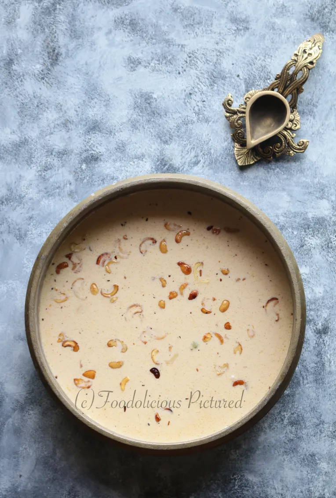

Ada pradhaman | Payasam
Published on 2,2026 by Rekha

Palada pradhaman – Kerala’s own payasam, which is quite unanimously considered as the must-have dessert to finish off a sadya (feast) – be it Onam sadya or any traditional celebrations. This recipe stays so close to me – passed on to me by uncle (who recently passed away) who was an accomplished chef whipping up grand sadya for weddings banquets or special occasions.
Ingradients you need
- Ada – ¾ cup
- Full cream milk (boiled) – 1 litre
- Milk maid – ½ can or as per taste
- Caster sugar – ¼ cup
- Green Cardamom – 4 pods
- Nutmeg powder – ¼ teaspoon
- Ghee – 2 tablespoons
- Cashew nut – ¼ cup
- Raisins – ¼ cup
How to make it
- In a pan bring water to rolling boil, turn the heat off and add the ada, cover and let it sit for 20-30 minutes. Or alternatively you could cook the ada as per the packet instructions. Strain and set aside.
- After you add the milk, add the cardamom and stir well. Add the milk maid and still well. Add the cooked ada and continue to cook till the payasam starts to thicken. Turn the heat off.
- Now in a small pan, heat the ghee and fry the cashew and raisins and add to the payasam. Serve warm or cold, they are delicious either way!